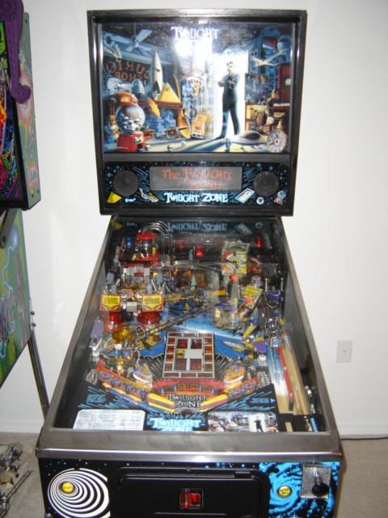
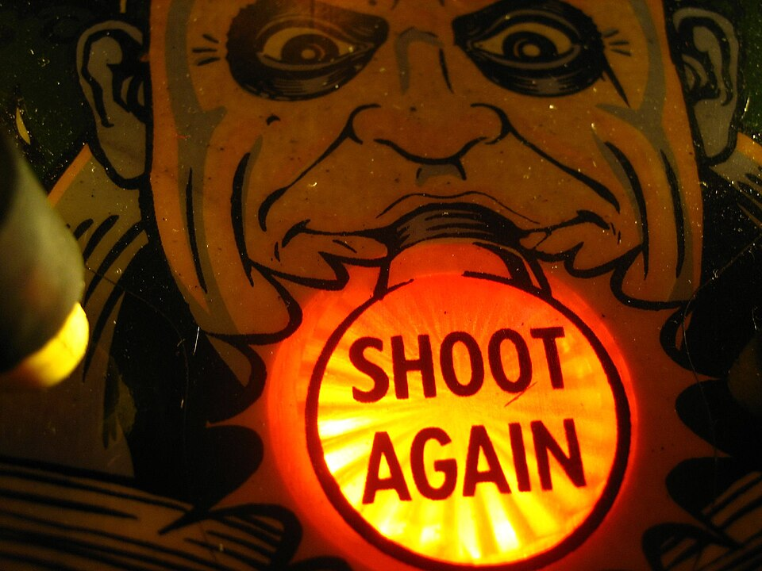

Pinball Layout Architecture & Player Sentiment
Demystifying pinball mechanics, real board photos, plain-English explanations, and player community quotes.
🎰 Iconic Pinball Machines (Real Physical Board Photos)

Twilight Zone
Designer: Pat Lawlor | Style: Stop-and-Go Tactical
Renowned as the most feature-packed machine ever built. Features a working physical Gumball Machine that holds and releases real balls, magnetic mini-playfields, and a high-speed ceramic ball.

The Addams Family
Designer: Pat Lawlor | Style: Multi-Level Tactical
The best-selling pinball machine of all time (20,270 units). Features "Thing's Hand" that reaches out of a box to physically steal and lock balls under the board.

Attack from Mars
Designer: Brian Eddy | Style: Classic Fan Layout
The gold standard of "Flow Layouts". Players shoot a central flying saucer target to make it wobble and explode, while side ramps feed the ball smoothly back to the flippers.
💡 Pinball Jargon Demystified (Plain English)
Pinball terminology can sound like word salad. Here is what these components actually are in simple terms:
What is a "Scoop"?
A Scoop is literally a hole cut into the wooden playfield board. When the ball rolls into it, it falls into a channel underneath the table. The game pauses the action, awards points or starts a mode, and then a solenoid plunger pops the ball back out to the flippers.
What is a "Ball Lock"?
A Ball Lock is a physical trap (inside a scoop, ramp, or toy) that holds your ball inside the machine instead of returning it to play. When you lock 1, 2, or 3 balls, the game releases all of them at the same time onto the board to trigger intense Multi-Ball Mode!
Demystified: "Slot Machine Scoop Ball Lock"
In Twilight Zone, there is a target hole styled like a Slot Machine. Hitting your ball into this hole drops it under the board (Scoop), traps the ball inside the machine for multi-ball (Ball Lock), and spins a random slot machine prize on the video display. It combines a physical ball trap with a mode trigger.
What is a "Bash Toy"?
A Bash Toy is a heavy interactive physical target in the center of the board (like a Castle Gate in Medieval Madness or a Flying Saucer in Attack from Mars). Players hit it directly with max force to make it shake, open, or explode, providing high physical feedback.
💬 Player Community Quotes & Bulk Sentiment Analysis
Why do players love these specific boards? Here is what players say on Pinside and Reddit:
Twilight Zone — Why Players Love It
Pinside #4 Rated"Bulk Player Sentiment: Celebrated as the ultimate tactical 'stop-and-go' board. Players love that every single target does something physically unique instead of just adding points."
"Pat Lawlor's masterpiece. Every single shot on the board triggers a distinct physical mechanism. The Gumball Machine is the coolest toy in pinball history."
— Pinside Collector Review"The ceramic Powerball moves so fast and completely ignores the under-playfield magnets. It changes your reflexes instantly during play."
— Reddit r/pinball ThreadAttack from Mars — Why Players Love It
Pinside #3 Rated"Bulk Player Sentiment: Celebrated as the gold standard of 'Flow Layouts'. It has zero clunky stops—balls shoot smoothly up ramps and return straight to your flippers at high speed."
"Attack from Mars is pure pinball perfection. The fan layout gives you wide, clear shot paths. Bashing the saucer in the center until it wobbles and explodes never gets old."
— Pinside Reviewer"It's the ultimate 'one more game' machine. Easy for beginners to understand right away, but fast enough for tournament pros to test rhythm."
— Pinball Arcade ForumMedieval Madness — Why Players Love It
Pinside #1 Rated Table"Bulk Player Sentiment: The top-rated table for decades. Players praise its incredible physical feedback—lowering a drawbridge and smashing a castle gate provides the most satisfying reward in pinball."
"Destroying the castle gate and watching the castle explode with audio and light effects is the peak physical reward in all arcade gaming."
— Pinside #1 Review"The pop-up trolls add instant tension when they rise out of the playfield wood. It balances smooth ramp flow with sudden physical obstacles."
— Reddit r/pinball🧩 Polyomino Relic Grid Adaptation (Goblin Cannon)
| Pinball Component | Polyomino Shape | Footprint | Goblin Cannon Mechanics |
|---|---|---|---|
| Pop Bumper Bank | 2x2 Square | 4 Cells | Repels cannonballs with high impulse velocity. Grants bonus energy on collision. |
| Drop Target Bank | 1x3 Straight | 3 Cells | Absorbs 3 hits before collapsing. Unlocks board energy multipliers upon reset. |
| Spinning Target | 1x1 Single | 1 Cell | Spins on pass-through, converting ball kinetic energy into rapid ticks of mana. |
| Scoop & VUK | L-Shape (3 cell) | 3 Cells | Traps cannonball for 1 second before ejecting toward high-value target tiles. |
| Electromagnet Core | 2x2 Block | 4 Cells | Traps ball in a magnetic field, then releases it along a curved trajectory. |
📚 Research Sources, Discourse & Video Reviews
🌐 Community Discourse & Ratings
-
Pinside Top 100 Pinball Machines ↗
Community ranking database for machine layouts, playfield ratings, and mechanical reviews.
-
Reddit (r/pinball) Community ↗
Player discussions on flow vs stop-and-go layouts, shot geometry, and component chaos.
🎥 Video Reviews & Gameplay Guides
-
Bowen Kerins & PAPA Pinball Tutorials ↗
Masterclass video breakdowns of playfield geometry, ramp feeds, and ball control tactics.
-
Todd Tuckey & Coastline Pinball Teardowns ↗
Mechanical inspections of solenoids, pop bumpers, habitrails, and physical bash toys.